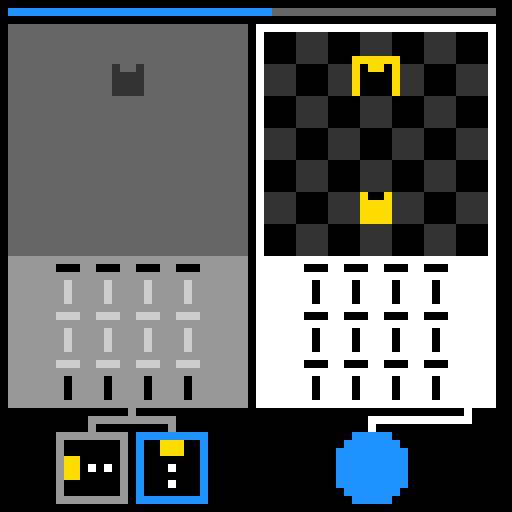
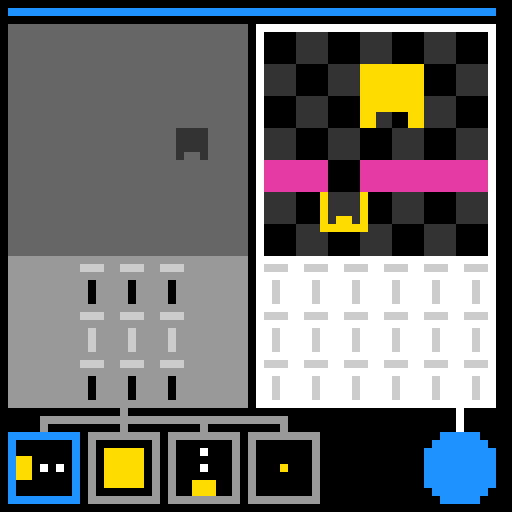
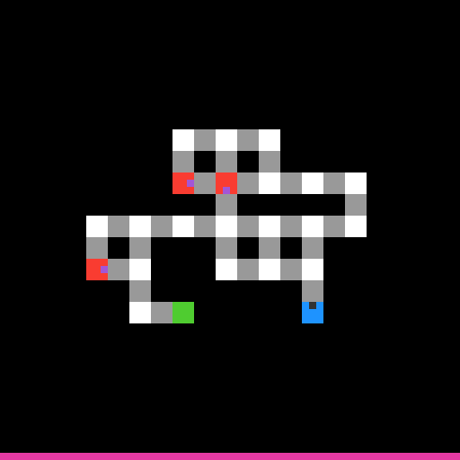

EXP-DUCK-009, normal Duck only
1. Before calculator: tn36
Duck reached 1/7 levels. This is the comparison case before the successful postlude.
Open replay in its own page
EXP-DUCK-024, normal Duck then deterministic postlude
2. Calculator that reached 1.11: tn36
Duck reasoned normally first. The zero-token repair then reached 3/7 levels. This notebook scored 1.11 publicly.
Open replay in its own page
EXP-DUCK-025, isolated deterministic route
3. Proposed calculator proof: tu93
The calculator solved levels 1-2 in exactly 28 actions with zero LLM tokens.
Open replay in its own page
EXP-DUCK-026, normal Duck already reached level 3
4. Current tu93 state
The postlude correctly skipped because Duck had already completed two levels. The still shows the resulting level-3 state.
Open replay in its own page